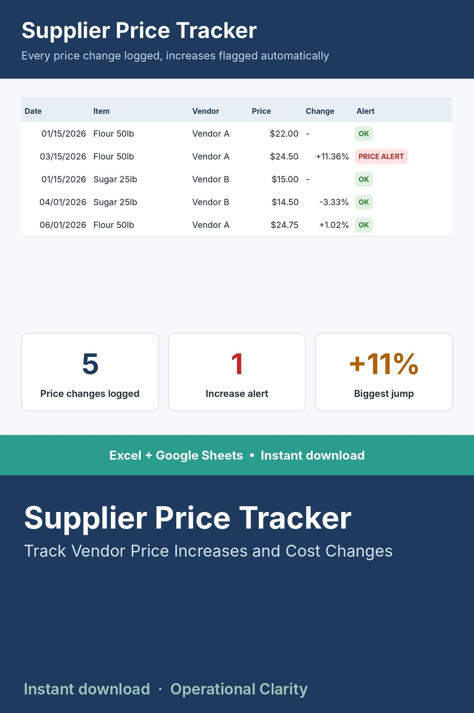

Supplier Price Tracker

NEVER GET BLINDSIDED BY A PRICE INCREASE AGAIN.
Every time a vendor sends a new price, log it as one row. This sheet automatically finds that item's previous price and calculates the dollar and percent change - and flags any increase of 5% or more so nothing slips past you unnoticed.
WHAT IT DOES
- Log the date, item, vendor, and new unit price
- Automatically pulls the item's previous logged price and calculates the $ and % change
- Flags any increase over 5% (the threshold is a single number you can change)
- Dashboard shows total price entries, total alerts, and total decreases logged
WHAT'S INCLUDED
- Excel file (.xlsx) - no macros
- Start Here tab with setup instructions
- Sample data included
WHO THIS IS FOR
Anyone who buys from the same vendors repeatedly and wants a paper trail of price history - both for catching sneaky increases and for negotiating leverage next time.
INSTANT DOWNLOAD - no physical item will be shipped. Because this is a digital product, all sales are final.